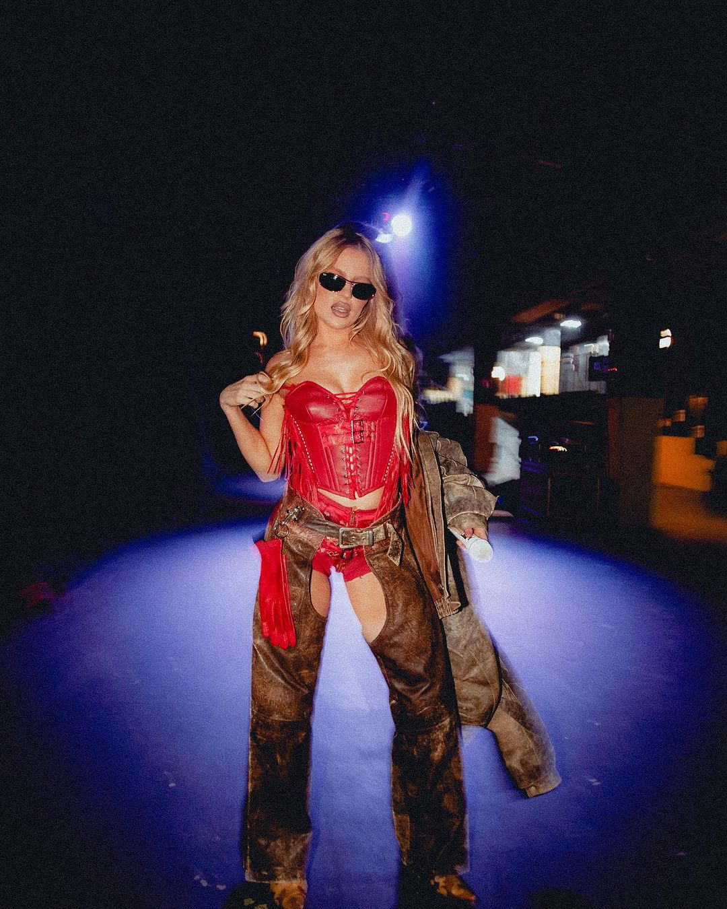
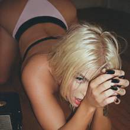
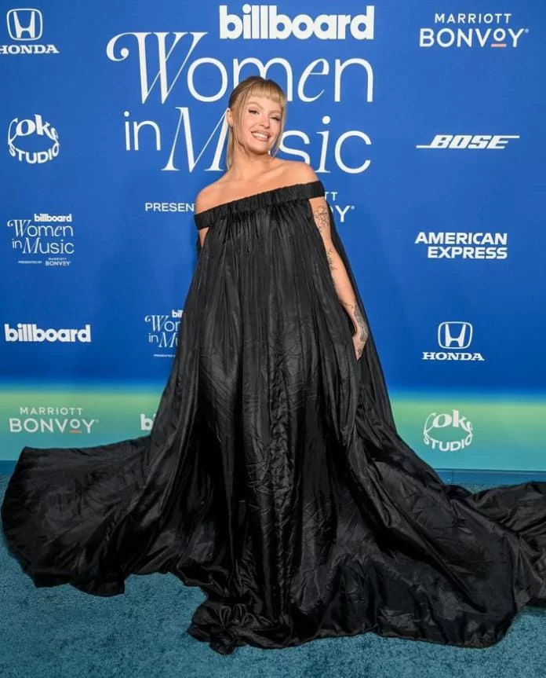
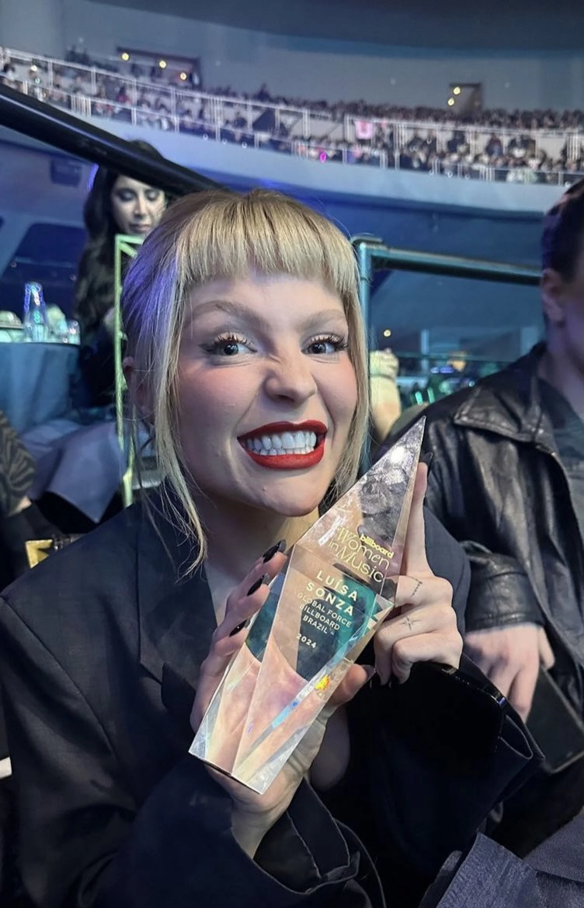
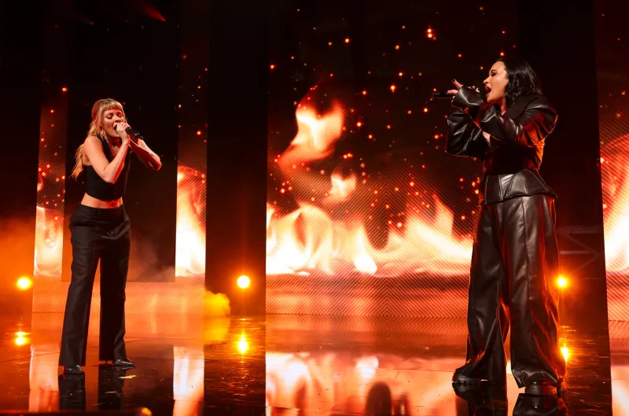

Luísa Gerloff Sonza nasceu em 18 de julho de 1998 em Tuparendi, Rio Grande do Sul, é uma cantora, compositora,atriz, empresária, influencer digital e apresentadora brasileira.
Iniciou a sua carreira em 2005 ao integrar como vocalista a banda de eventos Sol Maior, e posteriormente criou uma conta no YouTube onde publicava vídeos seus a fazer covers de músicas de outros artistas, o que a fez ficar popular na
plataforma, sendo reconhecida como a "Rainha dos Covers".

EP- Luísa Sonza
Em 2017, Luísa Sonza assinou um contrato de gravação coma gravadora Universal Music Brasil e lançou sua primeiramúsica autoral, intitulada "Good Vibes". Em julho, veio seusegundo single, intitulado "Olhos Castanhos", As faixasforam incluídas em seu primeiro extended play (EP) auto-intitulado, lançado em outubro de 2017, que ainda gerou osingle "Rebolar", bem como "Não Preciso de Você Pra Nada",com participação de Luan Santana. No próximo mês, foilançado o single "Devagarinho", que se tornou a primeiracanção da cantora a entrar no top 50 da plataforma destreaming Spotify Brasil. No próximo mês, Luísa Sonzalançou o single "Boa Menina".
1º Albúm- Pandora

Em junho de 2019, Sonza lançou seu álbum de estreia Pandora, que foilançado em conjunto com o single "Garupa", com participação de PablloVittar. O álbum foi precedido pelo lançamento do primeiro single "PiorQue Possa Imaginar" em março. Pandora provou ser um sucessocomercial, alcançando 100 milhões de reproduções no Spotify Brasil emmenos de três meses após seu lançamento, recebendo um certificadode platina da Pro-Música Brasil (PMB). Do álbum foram posteriormentelançados os singles "Fazendo Assim", com participação de Gaab,"Bomba Relógio", com participação de Vitão, e "Não Vou Mais Parar".Uma turnê para promover o álbum estreou em julho de 2019 em SãoPaulo. Ainda naquele ano, a cantora figurou como artista convidada nossingles "Cavalgada" de Heavy Baile, "Combatchy" de Anitta, "TheWeekend" de PrettyMuch, e "Tudo de Bom" de PK.
2º Album - Doce 22

2020
Em março, lançou o single "Braba", que tornou-se sua primeira música solo a alcançar o topo do Spotify Brasil. Dois meses
depois, participou da canção "Não Vai Embora" do cantor Dilsinho.Três meses depois, Sonza fez parte do single "Flores" do
cantor Vitão. Em julho, a artista lançou a faixa "Toma", que contou com participação do cantor MC Zaac. Entre outubro e
dezembro de 2020, Sonza ainda foi artista convidada dos singles "Quebrar Seu Coração" de Lexa, "Século 21" de Léo Santana,
"Friend de semana" de Danna Paola e Aitana, "Câncer" de Xamã, e "Quarto Andar" de As Baías.Ainda em dezembro, a cantora
lançou o single "Modo Turbo", com participação de Pabllo Vittar e Anitta, usada como primeiro single de seu segundo álbum
de estúdio Doce 22. Em fevereiro de 2021, lançou a canção "Cansar Você" com Thiaguinho, e também participou dos singles
"Ain't Worried" de Bruno Martini, "Cry About It Later" de Katy Perry, "Tentação" de Carol Biazin, e "Atenção" de Pedro Sampaio
2021
Doce 22, que foi lançado em 18 de julho, data em que completou 23 anos. O disco foi um sucesso comercial,
alcançando mais de 1 bilhão de audições nas plataformas digitais em sete meses de lançamento, sendo reconhecido
com um certificado de diamante pela PMB. As canções "VIP", em parceria com o rapper estadunidense 6lack, e "Melhor
Sozinha" foram lançadas como singles no mesmo dia do lançamento do álbum. Mais três singles, "Fugitivos", em
parceria com o cantor Jão, "Anaconda", em conjunto com Mariah Angeliq e "Café da Manhã", com a cantora Ludmilla,
que não estavam disponíveis à época do lançamento do álbum, foram posteriormente liberados. Ainda, a faixa
"Penhasco", apesar de não ter sido oficialmente lançada como single, tornou-se uma das mais bem sucedidas do disco.
Para promover Doce 22, a artista apresentou o programa Prazer, Luísa, indo ao ar pelo Multishow em cinco episódios a
partir de 7 de agosto de 2021.
2022
No início de 2022, Sonza apareceu como artista convidada no remix da canção "Sentadona" do DJ Gabriel do Borel, que se
tornou um sucesso em diversos países. Em junho, fez parte do projeto "Lud Session" de Ludmilla e do single "Hotel Caro" de
Baco Exu do Blues. Após ser revelado que Sonza não renovaria seu contrato com a Universal Music, foi posteriormente
anunciado que a cantora havia firmado contrato de gravação com a Sony Music Brasil, avaliado em US$ 20 milhões (cerca de
R$ 100 milhões à época), com o intuito de investir em uma carreira internacional. Seu primeiro lançamento com a gravadora foi
"Cachorrinhas", single lançado em julho que foi descrito como o encerramento de um período e de uma linguagem musical que
usou desde o início de sua carreira. Em agosto, ela participou da canção "Coração Cigano" de Luan Santana, enquanto no
próximo mês, iniciou a turnê O Conto dos Dois Mundos com uma apresentação na nona edição do festival Rock in Rio, e fez
parte da 13ª edição do projeto "Poesia Acústica". Sonza encerrou o ano de 2022 ao lançar "Mama.cita (Hasta la Vista)", uma
colaboração com Xamã.
3º Álbum - Escândalo Intimo
No início de 2023, Sonza apareceu como artista convidada nas canções "Deixa Eu Viver" de
Mari Fernandez, "Posição de Ataque" de Papatinho e "Saudade" de Ferrugem. Seu terceiro
álbum de estúdio, intitulado Escândalo Íntimo, foi lançado em agosto de 2023. Após seu
lançamento, o disco foi um sucesso em termos comerciais, acumulando mais de 15 milhões de
reproduções no dia de seu lançamento no Spotify Brasil, tornando-se a maior estreia de um
álbum por um artista brasileiro na plataforma. O trabalho gerou os singles "Campo de Morango"
e "Principalmente Me Sinto Arrasada", além de ter participações dos artistas Demi Lovato,
Marina Sena, Duda Beat e Baco Exu do Blues. Para promover Escândalo Íntimo, Sonza
embarcou em uma turnê que teve início na primeira edição do festival The Town em São Paulo,
em 3 de setembro. .Ainda para divulgação do álbum, foi lançado o single "La Muerte", ao lado
da rapper dominicana Tokischa, após o lançamento do disco
Women in Music

No dia 6 de Março Luísa esteve presente na premiação Women in Music da revista americana
Billboard em Los Angels onde recebeu um premio “global force” e performou a sua musica
Chico versão inglês e a música Penhasco 2 junto com Demi Lovato

